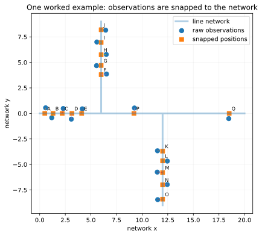
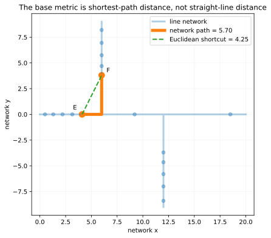
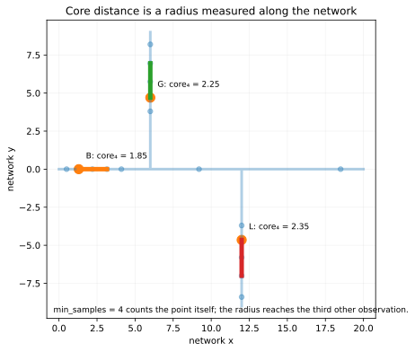
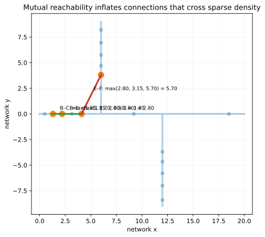
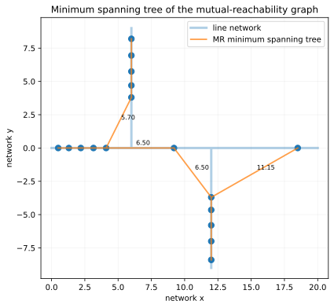
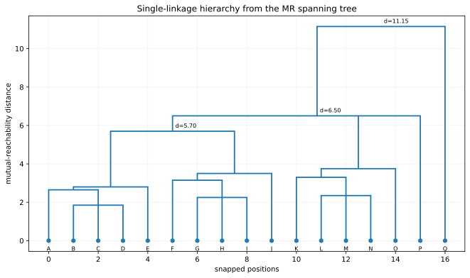
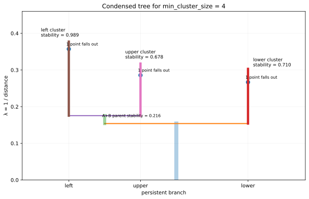
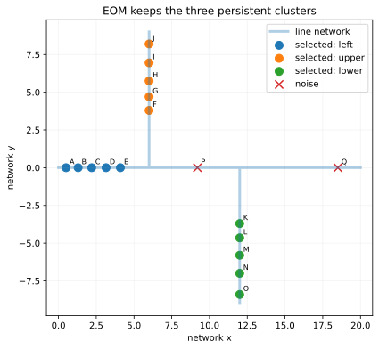
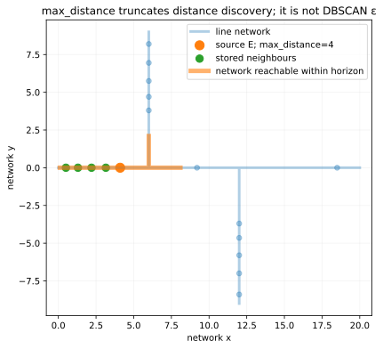

How net-hdbscan works
net-hdbscan is HDBSCAN* with one decisive change in the geometry: the base distance between observations is the shortest path along a supplied line network. Everything downstream—core distance, mutual reachability, the spanning structure, the hierarchy, condensation, and stability—is built on that network distance.
min_samples = 4 and min_cluster_size = 4. The numbers in the figures are computed from that example.Start with one small network
The easiest way to understand the algorithm is to watch one example change stage by stage. Raw observations need not lie exactly on the network. net-hdbscan first snaps them to continuous positions on the nearest network arc. The straight-line snap distance is retained as a diagnostic, but it is not added to the clustering metric.

- Replace Euclidean distance by shortest-path distance on the network.
- Estimate local density with network core distances.
- Transform network distance into mutual-reachability distance.
- Reduce that graph to a minimum spanning tree or forest.
- Build a tie-invariant single-linkage hierarchy.
- Condense the hierarchy using
min_cluster_size. - Select persistent clusters by stability and expand the result back to observations.
1. Replace straight-line geometry with network geometry
If observation \(i\) snaps to network position \(s_i\), define
The path \(\pi\) must follow network arcs. A geometric crossing is not automatically a junction: two lines connect only where they actually share a vertex after coordinate canonicalization.

2. Estimate density with the network core distance
Let \(k=\texttt{min_samples}\). With one observation per snapped position, the core distance is the smallest network radius containing \(k\) observations including the point itself:
With min_samples = 4, each point needs three other observations inside its core radius. On a network this radius is not a Euclidean circle; it bends and branches with the network.

For duplicate positions the package uses the weighted form
A position whose own weight already reaches min_samples has core distance zero. This is why duplicate compression can save network-search work without changing the default weighted interpretation.
3. Transform network distance into mutual reachability
Single linkage is vulnerable to sparse chains. HDBSCAN protects the hierarchy by inflating connections that involve locally sparse points. net-hdbscan uses the standard transform with network distance as the base metric:

| Pair | Network distance | Core scales | Mutual reachability |
|---|---|---|---|
| B–C | 0.90 | 1.85, 1.70 | 1.85 |
| B–E | 2.80 | 1.85, 2.80 | 2.80 |
| E–F | 5.70 | 2.80, 3.15 | 5.70 |
4. Reduce the mutual-reachability graph to a minimum spanning forest
Conceptually, put an edge between every measured pair of snapped positions and weight it by \(d_{\mathrm{mreach}}\). We do not need every edge to preserve the connected-component changes. A minimum spanning tree is enough for this complete worked example. In the real package the sparse graph may be disconnected, so the general object is a minimum spanning forest.

The important large connection levels are 5.70, 6.50, and 11.15 network units. Those levels will reappear in the hierarchy.
5. Turn the spanning structure into a cluster hierarchy
As the mutual-reachability threshold rises, connected components merge; equivalently, as it is lowered, they split. The resulting hierarchy is the network-distance analogue of the usual HDBSCAN single-linkage tree.

net-hdbscan makes one deliberate choice for tied distances: all equal-weight merges are processed simultaneously. A tied level creates a multifurcation rather than an arbitrary chain of zero-lifetime binary merges. This makes the hierarchy invariant to input row order and point-ID naming.
6. Condense the hierarchy with min_cluster_size
The raw hierarchy contains many tiny splits. With \(m=\texttt{min_cluster_size}\), a child smaller than \(m\) is treated as observations falling out of a persistent parent rather than as a new cluster. HDBSCAN is easier to read in density scale

7. Extract the stable clusters
For cluster \(C\), let \(\lambda_{\mathrm{birth}}(C)\) be the level where it becomes distinct and \(\lambda_p\) the level where point \(p\) leaves it. Stability is
With compressed positions, each position's contribution is multiplied by its integer weight. For the worked example:
| Persistent branch | Stability | EOM result |
|---|---|---|
| Left island | 0.989 | selected |
| Upper island | 0.678 | selected |
| Lower island | 0.710 | selected |
| Parent containing left + upper | 0.216 | replaced by children |
The Excess-of-Mass rule compares each parent against its selected descendants. Here the left and upper children together have stability 1.668, much larger than their parent's 0.216, so the two children survive separately.

The network-specific complication: max_distance
A textbook derivation can pretend every pairwise distance is available. Large network data cannot. net-hdbscan discovers only pairs satisfying
Pairs beyond the horizon are absent from the sparse graph. max_distance is therefore a distance-discovery horizon, not DBSCAN's eps.

The diagnostics distinguish structurally unreachable core distances from core distances that are merely truncated by the current radius. Adaptive mode grows the radius geometrically and may stop after consecutive tested radii yield the same flat result with sufficiently little resolvable truncation. That is a local stability criterion along the tested radius ladder, not a proof about every larger radius.
From the derivation to the package
from net_hdbscan import HDBSCANConfig, cluster_geodataframes
out = cluster_geodataframes(
points=points,
network=network,
config=HDBSCANConfig(
max_distance=3000,
min_cluster_size=20,
min_samples=10,
),
point_id_col="canonical_id",
)
out.points
out.clusters
out.hierarchy
out.summary
out.traceline network
↓ build_network_graph
raw points
↓ snap_points
snapped observations
↓ distinct_positions
weighted network positions
↓ neighbor_graph(max_distance)
sparse matrix of d_G
↓ core_distances
↓ mutual_reachability_forest
↓ simultaneous hierarchy
↓ condensed tree
↓ EOM / leaf selection
labels + membership + hierarchyWhat is standard HDBSCAN and what is specific to net-hdbscan?
| Stage | Standard HDBSCAN idea | net-hdbscan |
|---|---|---|
| Base metric | A metric or pairwise-distance representation | Shortest path between continuous snapped positions on a supplied line network |
| Core distance | k-neighbour density scale | Weighted network-radius scale; the point's own weight counts |
| Mutual reachability | max(coreᵢ, coreⱼ, dᵢⱼ) | Same transform using network distance |
| Spanning structure | Minimum spanning tree | Minimum spanning forest allowed on truncated/disconnected sparse graphs |
| Tied distances | Often resolved through a binary edge order | Equal MR levels merged simultaneously as multifurcations |
| Duplicate locations | Repeated observations | Exact snapped positions may be compressed and represented by integer weights |
| Distance availability | Often treated as complete | max_distance explicitly truncates distance discovery |
| Cluster extraction | EOM or leaf selection | Same persistence logic, extended to weighted/disconnected hierarchy |
References
- Campello, Moulavi & Sander (2013), Density-Based Clustering Based on Hierarchical Density Estimates.
- McInnes, Healy & Astels (2017), hdbscan: Hierarchical density based clustering.
- HDBSCAN: How HDBSCAN Works — the visual teaching structure that inspired this page.
- net-hdbscan source repository.